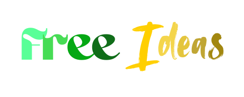

About Us
Welcome to Free Ideas! This project is a collection of free ideas for projects, apps, and websites that you can use to get inspired or to start your own project. The ideas are organized by category and are meant to be a starting point for your own creativity.
The project is open source and you can contribute by adding your own ideas or improving the existing ones. You can also use the ideas in your own projects, as long as you give credit to the original author.
We believe that sharing ideas is a great way to foster creativity and innovation, and we hope that this project will inspire you to create something amazing.
The people behind this project are passionate about technology, design, and creativity. We are always looking for new ideas and ways to improve the project, so feel free to reach out if you have any suggestions or feedback.
Thank you for visiting Free Ideas, and we hope you find something that inspires you!
